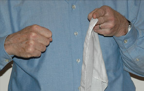

Coupling Loudspeaker to Air
|  | How hard can you punch a handkerchief? Not very hard, because it offers so little resistance. A loudspeaker has a similar problem when it tries to punch sound energy into the air. The usual language is that the speaker has a poor "impedance match" to the air. |
 |
A loudspeaker without an enclosure does a very poor job of producing sounds whose wavelengths are longer than the diameter of the loudspeaker. For an 8-inch speaker, diameter of speaker equals wavelength at about 1700 Hz. Even for a 16-inch speaker, the diameter equals the wavelength at 850 Hz. Besides the severe bass loss, the overall efficiency of such loudspeakers is low, about 3-5% compared to 25-50% for well designed horn type loudspeakers. |
| Loudspeaker basics |
Sound reproduction concepts
Loudspeaker concepts